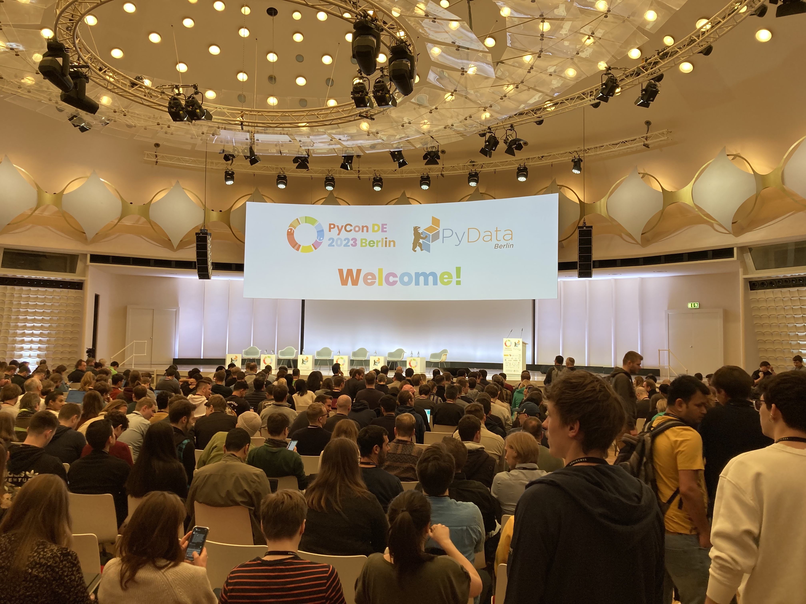

17 - 19 April 2023

in-place argument will be deprecatedpd.options.mode.copy-on-writeLimited resources (browser limitation)
Voici for rendering Jupyter Notebooks into self-contained interactive widgets
language-independent columnar memory format for flat and hierarchical data, organized for efficient analytic operations